No Hay Partidos Disponibles
Octavos 5 marzo 2025

Feeyenoord

Inter De Milan
14:45

Paris Saint Germain

Liverpool
17:00

Bayern Munchen

Leverkusen
17:00

Benfica

Barcelona
17:00
Octavos 12 marzo 2025

Lille

B. Dortmund
14:45

Aston Villa

Club Brugge
17:00

Ateltico De Madrid

Real Madrid
17:00

Arsenal

PSV
17:00
play-offs
Final
Glo: 1-2 Gana Feyenoord

Milan
1
Feyenoord
1
Final
Glo: 4-3 Gana Benfica

Benfica
3

Monaca
3
Final
Glo: 3-2 Gana Bayern M

Bayern Munich
1

Celtic
1
Final
Glo: 2-5 Gana Club Brugge

Atlanta
1

Club Brugge
3
Final
Glo: 3-0 Gana B. Dortmund

B. Dortmund
0

Sporting CP
0
Final
Glo: 6-3 Gana Real Madrid

Real Madrid
3

Manchester City
1
Final
Glo: 10-0 Gana Paris

Paris Saint Germain
7

Brest
0